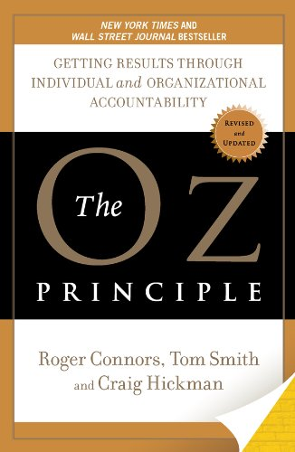

Hello there. My name is Bryan Miller and this site was made possible by the Odin Project cirriculum.
What is the Odin Project? I'm glad you asked! It's a fantastic online resource that guides those interested in pursuing a web development career through a self-guided learning experience. It's fully open source and it's updated regularly by a dedicated community.
In the spring of 2022, a rare opportunity presented itself at work. I was invited to participate in a book club. Over the course of 5 weeks, I read The Oz Principal: Getting Results Through Individual and Organizational Accountability by Craig Hickman, Tom Smith, and Roger Connors.
Equipped with a notepad and highlighters, I tackled the Oz Principle chapter by chapter.
The topic of accountability did not initially excite me. The limited encounters I had with the word accountability were negative, after mistakes were made and someone needed to be blamed.
However, the Oz Principle defines accountability as "a personal choice to rise above one's circumstances and demonstrate the ownership necessary for achieving desired results".
In simple terms, the Oz Principle is a way of life. It breaks down the mental barriers that prohibit so many from having a fulfilling personal and professional life. It separates thought into two categories: